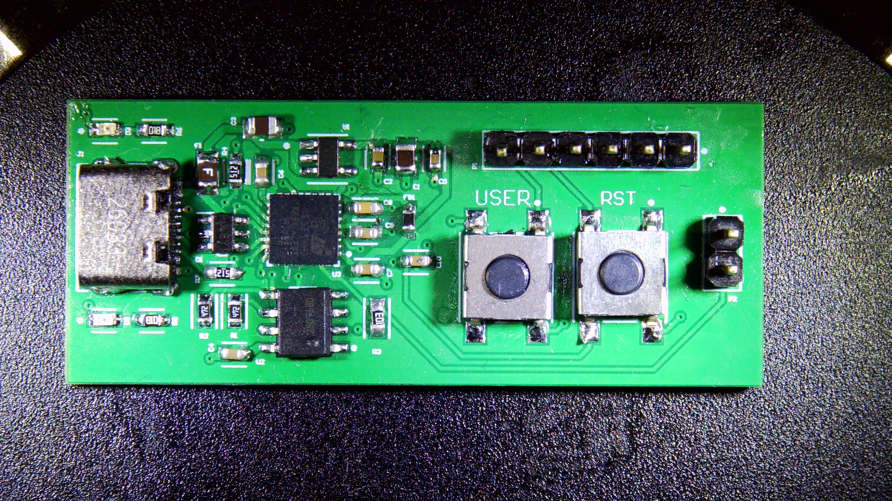
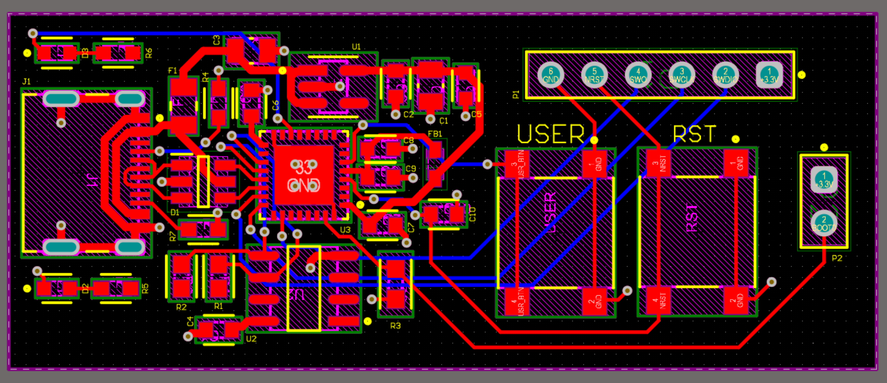
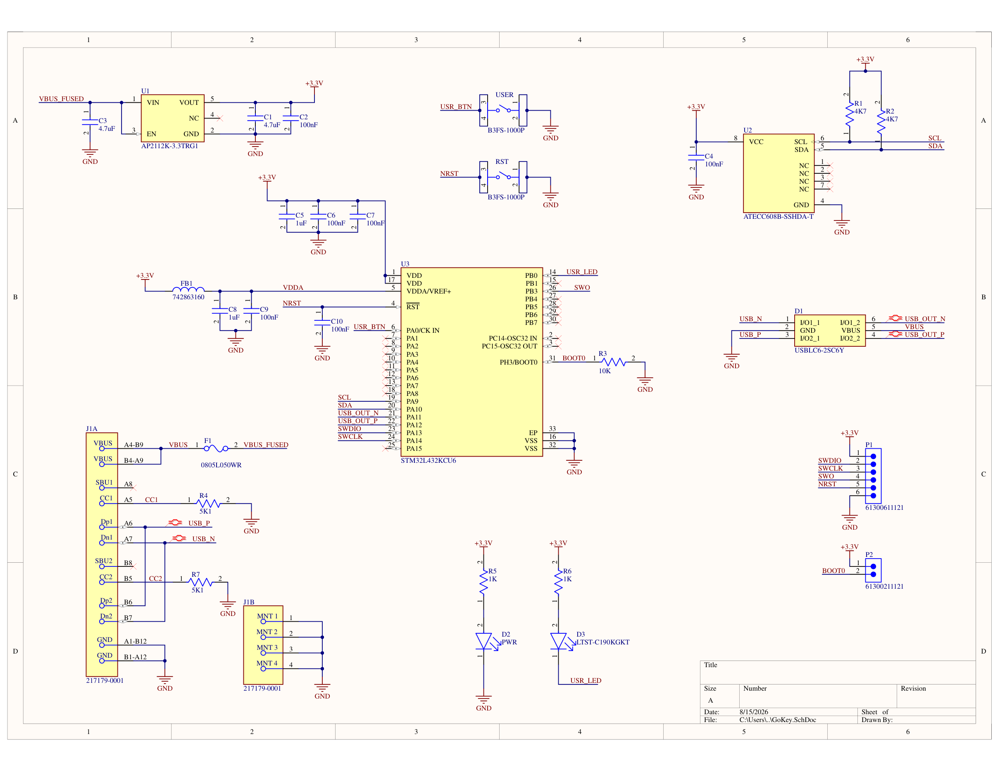

GoKey, a USB Security Key
Altium · STM32L4 · ATECC608B · USB-C
A USB-C hardware security key, along the lines of a FIDO key. The idea is simple: you plug it in, press the button to prove you're actually there, and you're logged in.
Why I built it
I just think hardware security keys are cool. Instead of typing in 2FA codes from an app, you plug the key in and you're in. I wanted to make my own version of one.
Where the keys live
The main idea is that the private keys never sit in the microcontroller's flash. They're kept in an ATECC608B secure element, a tamper-resistant chip made to generate and store ECC keys without ever giving them back out. Real security keys use the same kind of part, and I found it while I was researching how they work. It also seemed like a better thing to learn from than trying to build my own key storage on the STM32.

Building the board
The hardest part was the board itself. Everything had to fit on a small two-layer board about the size of a keyring, so the power and decoupling network took a lot of care. I also assembled it by hand, which is how I learned hot-air reflow on the STM32L4's QFN package and micro-soldering on the USB-C connector.
I took two things away from it. First, high-frequency decoupling caps need to be within about 1 to 3 mm of the pin, or they don't really do anything. Second, power and ground copper should be sized consistently. Current takes the lower-resistance path, so if the trace widths don't match you end up with uneven current and voltage drop.


I designed the board in Altium from start to finish, released the Gerbers, and hand-assembled the first units. A friend and I worked together on the software that goes with it.